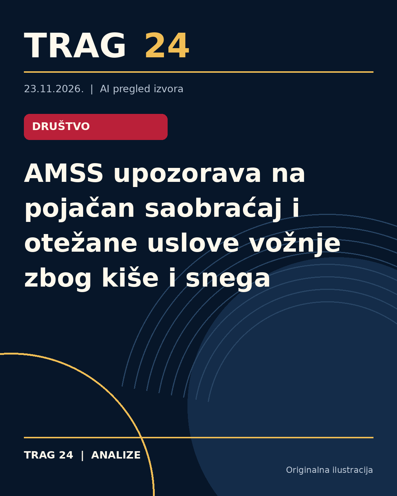

AMSS upozorava na pojačan saobraćaj i otežane uslove vožnje zbog kiše i snega

ŠTA SE DOGODILO
Auto-moto savez Srbije (AMSS) je jutros saopštio da se očekuje pojačan saobraćaj na ulicama i prilazima većih gradova, naročito u jutarnjim i popodnevnim terminima kada su gužve najizraženije. Istovremeno, vremenski uslovi otežavaju vožnju zbog kiše koja pada tokom celog dana, dok na planinskim područjima pada i sneg.
HRONOLOGIJA
Saobraćajne neprilike su evidentne već od ranih jutarnjih sati. AMSS je izdao upozorenje danas ujutro, objavljujući podatke o trajanju zadržavanja kamiona na graničnim prelazima sa zemljama u okruženju. Kamioni na izlazu iz zemlje čekaju do nekoliko sati: na Batrovcima tri sata, Šidu dva sata, Horgošu sat i po, dok su na Kelebiji čekanja oko dva sata.
ŠTA NAVODE IZVORI
Oba izvora, Nova.rs i N1, prenose identične informacije iz saopštenja AMSS-a. Upozoravaju da kiša i sneg otežavaju uslove za vožnju, posebno zbog smanjene vidljivosti i jakog severozapadnog vetra na otvorenim deonicama i mostovima. Takođe, posebno je istaknuto da su na prilazima većih gradova očekivane saobraćajne gužve u kritičnim jutarnjim i popodnevnim satima.
ŠTA JE POTVRĐENO
Potvrđeno je da je pojačan saobraćaj i da vremenski uslovi, sa kišom i snegom, negativno utiču na bezbednost i usporavaju saobraćaj. Takođe, potvrđena su čekanja kamiona na graničnim prelazima navedena u saopštenju AMSS-a.
ŠTA NIJE POTVRĐENO
Nije potvrđeno da je došlo do saobraćajnih nezgoda ili drugih većih incidenata u ovom periodu. Takođe, nema informacija o merama koje su preduzete od strane saobraćajnih ili bezbednosnih službi povodom pojačanog saobraćaja i vremenskih uslova.
ŠTA OSTАJE OTVORENO: Ostaje otvoreno koliko će vremenski uslovi uticati na sigurnost vozača tokom dana i da li će saobraćajne gužve izazvati dodatne probleme ili zastoje. Nije poznato da li će kestanja na graničnim prelazima varirati ili se produžiti.
Izvori
- https://nova.rs/vesti/drustvo/amss-pojacan-saobracaj-na-prilazima-vecih-gradova-kisa-otezava-voznju/
- https://n1info.rs/vesti/amss-pojacan-saobracaj-na-prilazima-vecim-gradovima-kisa-otezava-voznju/
Ova analiza je pripremljena uz pomoć veštačke inteligencije na osnovu javno dostupnih izvora. Navodi izvora nisu nužno nezavisno potvrđeni.